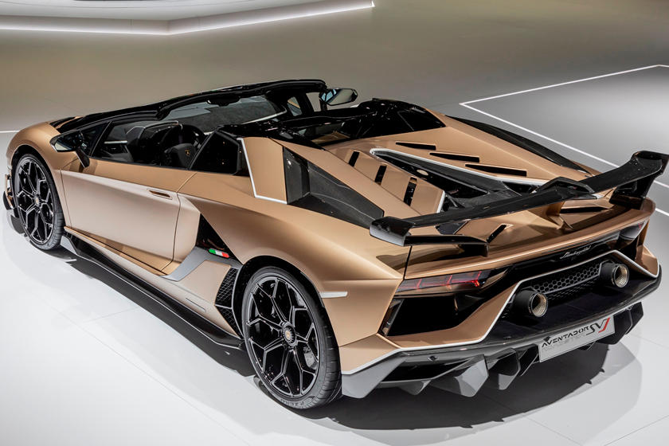

Überblick
Mit nur 800 Exemplaren, ist der SVJ Roadster
das ikonischste Modell der Aventador-Familie.
Die Lamborghini Aerodynamik ist so futuristisch wie noch nie:
Das System ALA 2.0 und Aero-Vectoring sorgen für minimalen
Luftwiderstand auf der Geraden und einen optimalen Anpressdruck in Kurven.
Der 12V-Saugmotor ist mit seinen 770 PS überwältigend.
Exterior

Beim SVJ Roadster wurde das ultraleichte Material der Carbonfaser
für die Karosserie und das abnehmbare Hardtop verwendet. Die Karosserie
wartet mit größeren Lufteinlässen im Vergleich zu vorher sowie breiteren
Seitenschwellern, markanten Aerodynamikprofilen und einer leichteren
und höher positionierten Abgasanlage auf.
Das Hardtop wurde mit dem innovativen Hochdruck-RTM-Verfahren gefertigt.
Der SVJ 63 Roadster ist eine limitierte Edition mit 63 nummerierten
Exemplaren und verfügt über einen noch exklusiveren Look.
Interieur
Das technologische Aussehen der im Monocoque verwendeten
Carbonfaser, welche in den Türen, in den Sitzen, im Mitteltunnel und der
Konsole wieder in Erscheinung tritt, wird mit dem aeronautisch inspirierten Design
kombiniert, bei dem das Leder und das Alcantara der Verkleidungen dem luxuriösen
Interieur das gewisse Etwas verleihen.
Es sind aber die raffinierten Details der Kreuzstich-Steppnähte und
des SVJ Roadster-Schilds im Innenraum, die seinen Charakter einzigartig machen